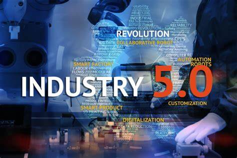
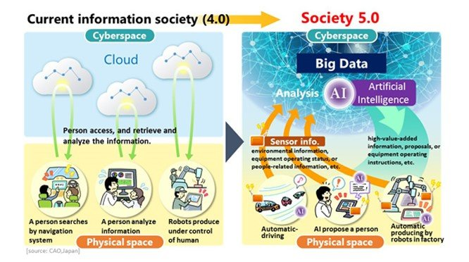

One definition: "A human-centered society that balances economic advancement with the resolution of social problems by a system that highly integrates cyberspace and physical space."
Society 5.0 was proposed in the 5th Science and Technology Basic Plan as a future society that Japan should aspire to. It follows the hunting society (Society 1.0), agricultural society (Society 2.0), industrial society (Society 3.0), and information society (Society 4.0).

How Society 5.0 works
Society 5.0 achieves a high degree of convergence between cyberspace (virtual space) and physical space (real space). In the past information society (Society 4.0), people would access a cloud service (databases) in cyberspace via the Internet and search for, retrieve, and analyze information or data.
In Society 5.0, a huge amount of information from sensors in physical space is accumulated in cyberspace. In cyberspace, this big data is analyzed by artificial intelligence (AI), and the analysis results are fed back to humans in physical space in various forms.
In the past information society, the common practice was to collect information via the network and have it analyzed by humans. In Society 5.0, however, people, things, and systems are all connected in cyberspace and optimal results obtained by AI exceeding the capabilities of humans are fed back to physical space.

Achieving Society 5.0
In the information society (Society 4.0), cross-sectional sharing of knowledge and information was not enough, and cooperation was difficult.
Because there is a limit to what people can do, the task of finding the necessary information from overflowing information and analyzing it was a burden, and the labor and scope of action were restricted due to age and varying degrees of ability. Also, due to various restrictions on issues such as a decreasing birthrate and aging population and local depopulation, it was difficult to respond adequately.
Social reform (innovation) in Society 5.0 will achieve a forward-looking society that breaks down the existing sense of stagnation, a society whose members have mutual respect for each other, transcending the generations, and a society in which each and every person can lead an active and enjoyable life.